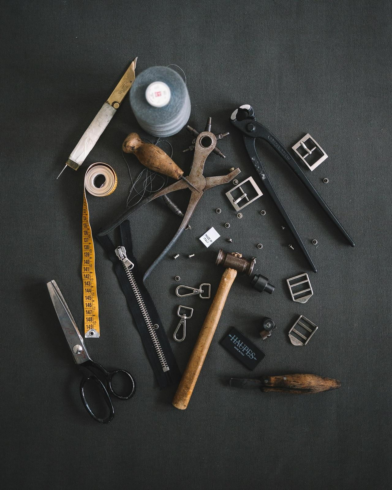
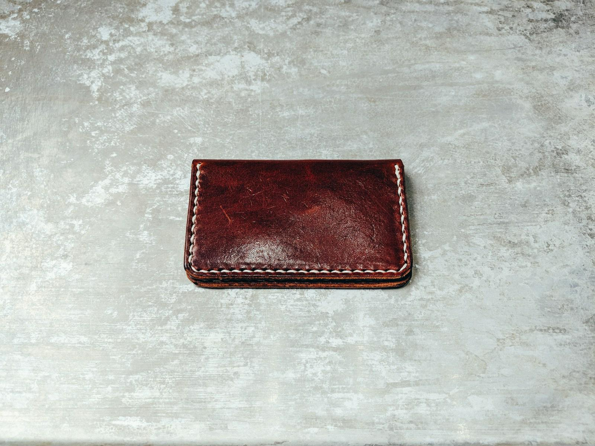
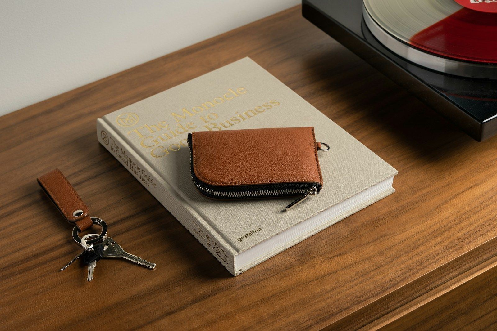
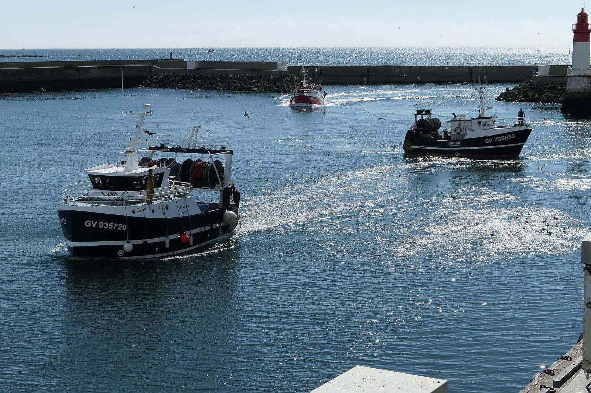

Bigouden Cuirs et les Arts secrets
Atelier-boutique de maroquinerie et d'articles en cuir, au 45 rue de la Marine, au Guilvinec.
Atelier-boutique de maroquinerie et d'articles en cuir, au 45 rue de la Marine, au Guilvinec.

Bigouden Cuirs fabrique et vend des articles en cuir dans son atelier-boutique du Guilvinec. Entrez voir les pièces, parler matière et finitions, et trouver l'objet qui vous accompagnera longtemps.
Les créations, les cuirs travaillés et les services proposés seront présentés ici avec l'atelier.


La deuxième moitié du nom de la boutique. L'atelier racontera ici ce qu'elle recouvre.

La boutique vous attend au 45 rue de la Marine, dans le port de pêche du pays bigouden. Une halte à faire en ville, entre deux retours de bateaux.
Une question sur une pièce, une commande ou une réparation ? Le formulaire de contact sera branché sur le site final.
En attendant, la boutique vous accueille au 45 rue de la Marine.